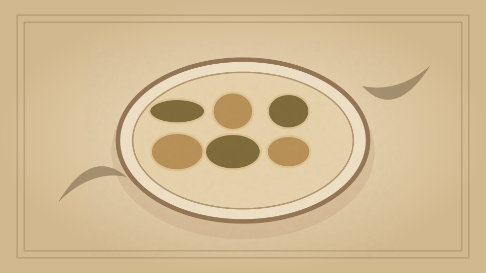

1910 · Fannie Merritt Farmer · CEREALS
Macaroni, Italian Style
The Boston Cooking-School Cook Book

Historical Recipe
The following text is extracted from the 1910 edition, retaining historical terminology and quantities.
Original Ingredients & Directions
1 cup macaroni
2 tablespoons butter
2 tablespoons flour
1½ cups scalded milk
⅔ cup grated cheese
Salt and paprika
¼ cup finely chopped cold boiled ham
Break macaroni in one-inch pieces and cook in boiling salted water, drain, and reheat in sauce made of butter, flour, and milk, to which is added cheese. As soon as cheese is melted, season with salt and paprika, and turn on to a serving dish. Sprinkle with ham, and garnish with parsley.
92 Macaroni à la Milanaise
Automatically extracted transcription; editorial verification pending. Historical instructions may not meet modern food-safety standards.